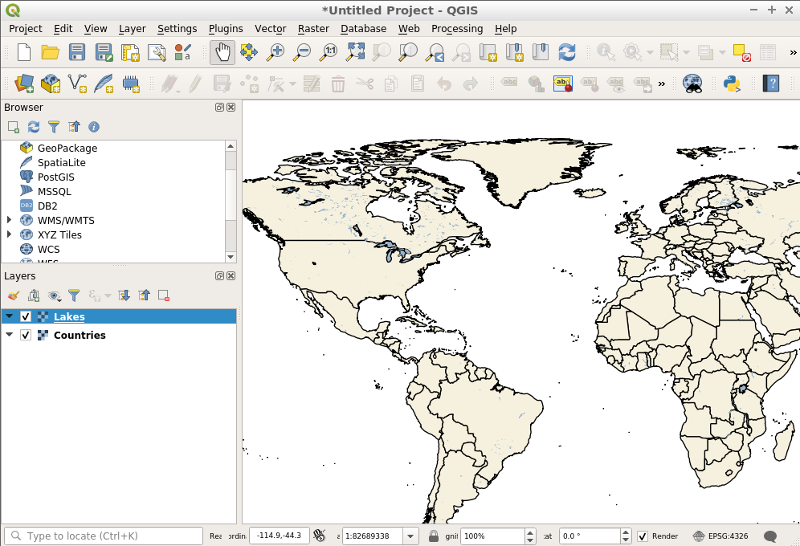

Snabbstart för MapServer¶
MapServer is an Open Source server based application that allows you to publish geographic map images and vector data through the Internet using OGC Standards such as Web Map Service (WMS), Web Feature Service (WFS) and Web Coverage Service (WCS).
Innehåll
Konfigurera MapServer med hjälp av konfigurationsfilen Mapfile¶
Observera
Vad får jag lära mig? I det här avsnittet får du lära dig vad en Mapfile är och hur du konfigurerar den så att MapServer kan servera en shapefil som bilder med hjälp av WMS-begäranden.
Vad är en Mapfile?¶
Mapfile <https://mapserver.org/mapfile/index.html>`_ är den konfigurationsfil som MapServer använder för att återge geospatiala data som bilder eller vektordata. Dess huvudsyfte är att definiera vilka lager som kan ritas, hur nödvändiga data ska läsas och hur de ska återges (t.ex. färg, symbol, etikett osv.).
Skapar min första Mapfile¶
Open any text editor (e.g. ).
Create the file ”mapserver_quickstart.map” at the following location:
/home/user/mapserver_quickstart.mapLägg in följande innehåll i den:
MAP NAME "MAPSERVER_QUICKSTART" EXTENT -137 29 -53 88 UNITS DD SHAPEPATH "/usr/local/share/data/natural_earth2/" SIZE 800 600 IMAGETYPE PNG24 PROJECTION "init=epsg:4326" END WEB METADATA ows_title "MapServer Quickstart" ows_enable_request "*" ows_srs "EPSG:4326 EPSG:25832 EPSG:25833" END END LAYER NAME "Countries" STATUS ON TYPE POLYGON DATA "ne_10m_admin_0_countries" CLASS STYLE COLOR 246 241 223 OUTLINECOLOR 0 0 0 END END END END
Observera
I exemplet används datasetet Natural Earth, som redan finns på OSGeoLive under ~/data/natural_earth2 (en genväg till /usr/local/share/data/natural_earth2).
Varje objekt i en Mapfile börjar med sitt namn (t.ex. MAP) och slutar med END. En Mapfile börjar alltid med objektet MAP och bör innehålla en lista över LAYER-objekt som Mapfile kan läsa och rita. I vår Mapfile har vi för närvarande bara ett lager definierat.
Låt oss ta en titt på några av de objekt (och egenskaper) som definieras i vår Mapfile:
EXTENT: anger den geospatiala standardbegränsningsboxen för denna konfiguration.
LAYER: definierar åtkomst- och visningsegenskaper för en spatial datamängd. Vi lägger till ytterligare ett lager senare.
SHAPEPATH: sets a base path for file-based data (e.g. shapefiles or GeoTIFF images).
Om vi tittar närmare på LAYER i vår Mapfile ser vi att den också innehåller ett antal egenskaper och objekt. Bland dem finns:
STATUS: anger om lagret kan ritas (ON), inte kan ritas (OFF) eller alltid ritas (DEFAULT).
TYPE: den geometrityp som MapServer ska använda vid rendering av data som en bild. I vår Mapfile kommer data att ritas som polygoner.
DATA: namnet på den spatiala datafil som detta skikt använder, i detta fall en shapefil.
CLASS: bestämmer hur du ska rita ett lager (styling). Vi kommer att gå igenom detta objekt mer i detalj senare.
Observera
En fullständig lista över tillgängliga objekt och egenskaper som en Mapfile kan ha finns på dokumentationssidan för MapServer <https://mapserver.org/mapfile/index.html>`_.
Rendera en kartbild med MapServer med hjälp av en WMS GetMap-begäran¶
Observera
Vad får jag lära mig? Du kommer att lära dig att rendera en bild med lager från en kartfil med MapServer med hjälp av en OGC WMS-begäran.
Öppna en webbläsare och ange följande URL:
http://localhost/cgi-bin/mapserv?map=/home/user/mapserver_quickstart.map&SERVICE=WMS&REQUEST=Getmap&VERSION=1.1.1&LAYERS=Countries&STYLES=&SRS=EPSG:4326&BBOX=-137,29,-53,88&FORMAT=PNG&WIDTH=800&HEIGHT=600
Vad betyder ovanstående? Om vi uttrycker det i enkla ord är det en Web Map Service (WMS) GetMap-begäran som säger till MapServer att ”använda följande kartfil för att rendera de angivna lagren som en png-bild baserat på vissa användartillhandahållna parametrar som bildstorlek, geografisk utsträckning, projektion etc.”. Alla lager som anges i egenskapen ”&LAYERS=…” och som har STATUS ON i Mapfile kommer att renderas utöver alla lager med STATUS DEFAULT. Resultatet ser ut på följande sätt:

Observera
Alla parametrar i begäran är WMS-specifika, utom ”?map=/home/user/mapserver_quickstart.map”, som är MapServer-specifik.
Rendera en kartbild med MapServer med hjälp av kommandoraden¶
Även om MapServer är inriktat på webbapplikationer kan det också producera bilder på kommandoraden. Detta kan vara användbart om du letar efter repetitiv mappning eller vid felsökning.
Open a terminal () and type:
map2img -m /home/user/mapserver_quickstart.map -o /home/user/Documents/mymap.png
If this command runs successfully, you are able to see your rendered map at file:///home/user/Documents/mymap.png.
Lägg till ett nytt lager i Mapfile för att betjäna en lokal Shapefile¶
Observera
Vad får jag lära mig? Du får lära dig hur du lägger till en ny objektdefinition för lager i din Mapfile.
Vi ska nu lägga till ett nytt lager i vår Mapfile. Före den sista END-satsen i kartfilen lägger du till följande lagerkonfiguration:
LAYER
NAME "Lakes"
STATUS ON
TYPE POLYGON
DATA "ne_10m_lakes"
CLASS
STYLE
COLOR 153 179 204
END
END
END
Nu har vi 2 lagerdefinitioner i vår Mapfile. Observera att den nya som vi just lagt till har egenskapen ”STATUS” inställd på ”ON”. Det betyder att om vi inte specifikt begär det kommer det inte att renderas.
Låt oss ta vår tidigare WMS GetMap-begäran och lägga till vårt nya ”Lakes”-lager i den återgivna bilden. Vi behöver helt enkelt lägga till det nya lagernamnet i egenskapslistan ”LAYERS”:
http://localhost/cgi-bin/mapserv?map=/home/user/mapserver_quickstart.map&SERVICE=WMS&REQUEST=Getmap&VERSION=1.1.1&LAYERS=Countries,Lakes&STYLES=&SRS=EPSG:4326&BBOX=-137,29,-53,88&FORMAT=PNG&WIDTH=800&HEIGHT=600
Den bild som återges av MapServer ser ut som vår tidigare karta, men med tillägg av sjöarna från vårt nya lager:

Utforma ett lager med hjälp av Mapfile-konfigurationer¶
Observera
Vad får jag lära mig? Du kommer att få se ett exempel på styling av element i ett lager beroende på några av dess dataegenskaper.
In a Mapfile, a LAYER object can contain an infinite number of CLASS objects. These are used to style the elements contained in the spatial data file (DATA). For example, if we look closer at our ”ne_10m_lakes” data file using a tool such as ogrinfo, we’ll see the geometry and attribute definitions it contains. These attribute values can be used as a way to draw the elements inside a dataset differently using multiple CLASS objects.
In our ”ne_10m_lakes” dataset, we have a ScaleRank attribute, which defines the significance of the lakes. We can use this as a way to render the lakes differently. In the LAYER object, we’ll add another CLASS object just before our current one:
LAYER
NAME "Lakes"
STATUS ON
TYPE POLYGON
DATA "ne_10m_lakes"
CLASSITEM "ScaleRank"
CLASS
EXPRESSION /0|1/
STYLE
COLOR 153 179 204
OUTLINECOLOR 0 0 0
END
END
CLASS
STYLE
COLOR 153 179 204
END
END
END
Vad gör vårt nya CLASS-objekt? Det säger i princip till MapServer att rita de element som har egenskapen ”ScaleRank” lika med ”0” eller ”1” med en svart kontur. Class-objekt läses alltid uppifrån och ned för varje element som ska ritas. När en funktion matchar det ”EXPRESSION” som anges i en klass, kommer den klassen att rendera funktionen. Om funktionen inte matchar en klass kontrolleras nästa klass. Om en feature inte matchar någon klass renderas den inte alls, men om den sista klassen i ett lager inte innehåller något EXPRESSION fungerar den klassen som standard. Egenskapen LAYER ”CLASSITEM” talar om för MapServer vilket attribut som ska användas vid utvärdering av EXPRESSIONs som definieras i CLASS-objekten.
Resultatet av detta nya tillägg bör göra att de stora sjöarna i vår kartbild återges med en svart kontur:

{kind=link}
Observera
Läs mer om EXPRESSIONS i MapServer.
Publicera dina data som OGC WMS (Web Map Service)¶
MapServer stöder olika OGC-standarder som OGC WMS, WFS eller WCS. Med OGC WMS kan du publicera dina data som en karttjänst och integrera tjänsten i ett Desktop GIS som QGIS eller i en webbklient som OpenLayers eller Mapbender.
Använda QGIS Desktop för att ladda din OGC WMS¶
Starta QGIS via
Gå till .
Klicka på knappen Ny och lägg till ett namn och din Service URL
Spara dina inställningar:
Sedan kan du ansluta till din tjänst och lägga till ett eller flera lager från tjänsten i ditt QGIS-projekt. Om du väljer skiktet med ID 0 kan du ladda hela tjänsten med alla skikt på en gång.
{kind=link}
What next?¶
Det här är ett enkelt exempel, men du kan göra mycket, mycket mer. MapServer-projektets webbplats innehåller många resurser som hjälper dig att komma igång. Här är några resurser att kolla in nästa gång:
Run through the Getting Started with MapServer workshop.
Ta en titt på MapServer Tutorial som innehåller fler Mapfile-exempel.
Läs mer om OGC-standarder i MapServer (WMS, WFS, SLD, WFS Filter Encoding, WCS, SOS, etc.) i ”OGC Support and Configuration <https://www.mapserver.org/ogc/index.html>`_”.
Är du redo att använda MapServer? Gå då med i gemenskapen på e-postlistorna <https://www.mapserver.org/community/lists.html>`_ för att utbyta idéer, diskutera potentiella förbättringar av programvaran och ställa frågor.